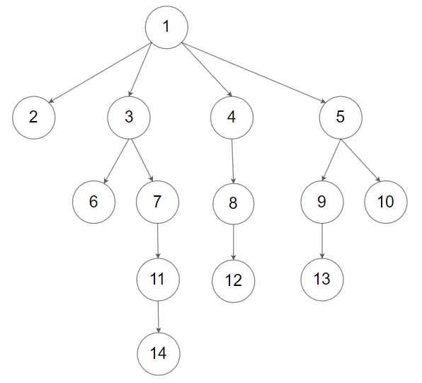
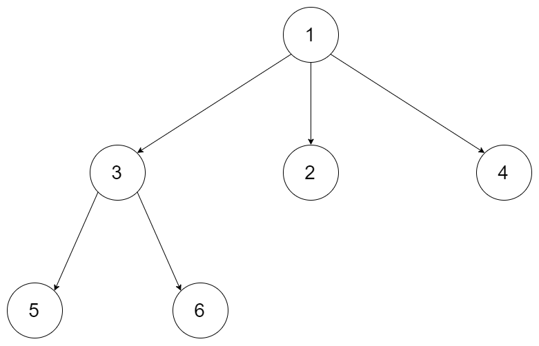

| Category | Difficulty | Likes | Dislikes |
|---|---|---|---|
| Algorithms | Medium | 491 | 212 |
bloomberg | facebook | google
You are given all the nodes of an N-ary tree as an array of Node objects, where each node has a unique value.
Return the root of the N-ary tree.
Custom testing:
An N-ary tree can be serialized as represented in its level order traversal where each group of children is separated by the null value (see examples).

For example, the above tree is serialized as [1,null,2,3,4,5,null,null,6,7,null,8,null,9,10,null,null,11,null,12,null,13,null,null,14].
The testing will be done in the following way:
Node object into an array in an arbitrary order.findRoot, and your function should find and return the root Node object in the array.Node object and serialize it. If the serialized value and the input data are the same, the test passes.
Example 1:

Input: tree = [1,null,3,2,4,null,5,6]
Output: [1,null,3,2,4,null,5,6]
Explanation: The tree from the input data is shown above.
The driver code creates the tree and gives findRoot the Node objects in an arbitrary order.
For example, the passed array could be [Node(5),Node(4),Node(3),Node(6),Node(2),Node(1)] or [Node(2),Node(6),Node(1),Node(3),Node(5),Node(4)].
The findRoot function should return the root Node(1), and the driver code will serialize it and compare with the input data.
The input data and serialized Node(1) are the same, so the test passes.Example 2:
Input: tree = [1,null,2,3,4,5,null,null,6,7,null,8,null,9,10,null,null,11,null,12,null,13,null,null,14]
Output: [1,null,2,3,4,5,null,null,6,7,null,8,null,9,10,null,null,11,null,12,null,13,null,null,14]
Constraints:
[1, 5 * 104].
Follow up: